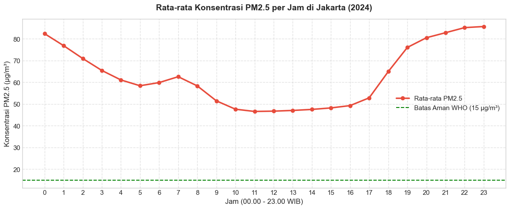
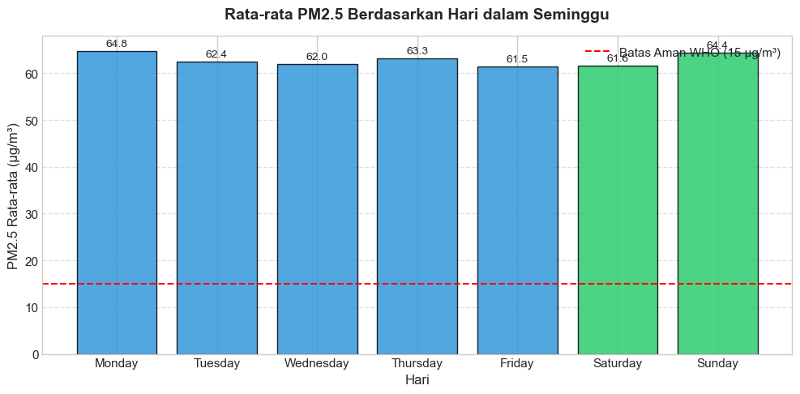
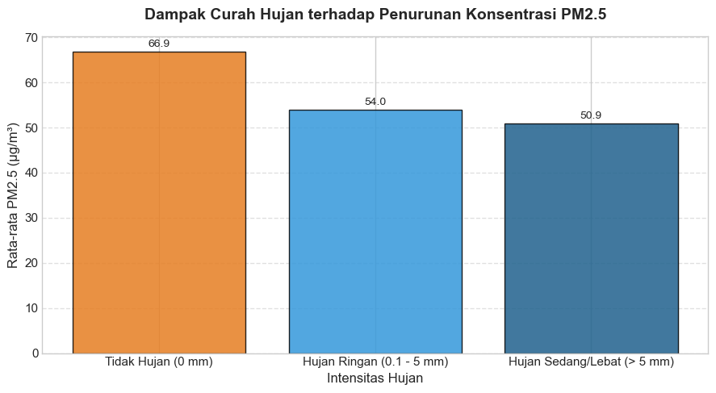
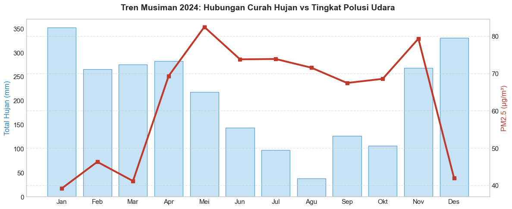

Jakarta Urban Air Quality & Mobility Analysis (2024)
Sebuah studi kasus analitik komprehensif yang membedah 8.784 titik data historis per jam untuk menguji korelasi antara dinamika polutan atmosfer (PM2.5, PM10, AQI), anomali cuaca ekstrem, dan pola aktivitas warga di DKI Jakarta.
1 Ringkasan Eksekutif & Temuan Kunci
Dari 366 hari pengamatan, tidak ada satu hari pun di Jakarta yang masuk kategori "Baik" menurut standar US EPA. Sebanyak 76,7% hari berada dalam kategori "Tidak Sehat" hingga "Sangat Berbahaya".
Berlawanan dengan asumsi umum bahwa jam berangkat kerja adalah waktu paling berpolusi, PM2.5 justru memuncak pada jam 23.00 malam (85,7 µg/m³) akibat fenomena inversi suhu dan masuknya truk logistik berat.
Udara hari Minggu terbukti sama buruknya dengan hari Senin. Libur perkantoran tidak mereduksi emisi karena tingginya mobilitas rekreasi dan operasional industri penyangga Jabodetabek di akhir pekan.
Curah hujan lebat mereduksi partikel debu dari 66,9 menjadi 50,9 µg/m³. Namun, angka ini tetap 3,3 kali lipat di atas batas aman WHO (15 µg/m³). Hujan bukanlah solusi jangka panjang.
2 Executive Dashboard Interaktif (Power BI)

Fitur Utama Dashboard:
- Global Slicer Banner: Filter dinamis Bulan, Hari Kerja/Weekend, dan Musim.
- Benchmark Standar WHO: Garis referensi batas aman 15 µg/m³ tanpa distorsi sumbu Y.
- Harmonisasi Warna Semantik: Merah untuk bahaya polusi, biru untuk presipitasi hujan.
DAX Measures Khusus:
Avg PM2.5&Max AQIuntuk deteksi ekstrem.% Jam Melebihi WHO(menemukan 96.8% jam melebihi batas aman).- Format angka dinamis
Total Curah Hujandengan satuan kustom.
3 Eksplorasi Data & Bukti Statistik (Python)
1. Mengapa Pukul 23.00 Malam Menjadi Titik Terburuk?
Data membuktikan konsentrasi polutan terendah terjadi di siang hari (11.00–14.00 WIB) saat panas matahari menggerakkan sirkulasi udara vertikal. Begitu malam tiba, lapisan udara dingin mengunci asap di dekat tanah (inversi suhu), diperparah oleh dibukanya akses tol dalam kota bagi truk diesel muatan berat setelah jam 21.00 WIB.

2. Mitos Hari Libur: Udara Minggu Sama Buruknya dengan Senin
Banyak pihak menduga hari kerja menghasilkan polusi lebih tinggi karena jam kantor. Faktanya, rata-rata PM2.5 hari Minggu mencapai 64,4 µg/m³, hampir sama dengan hari Senin (64,8 µg/m³). Hal ini membuktikan bahwa emisi rekreasi warga Jakarta dan pabrik di kawasan industri penyangga tetap beroperasi masif di hari libur.

3. Rain Washing Effect: Seberapa Efektif Hujan Membersihkan Udara?
Hujan sedang hingga lebat terbukti mereduksi partikel debu sebesar 23,9% (dari 66,9 menjadi 50,9 µg/m³). Namun, bahkan setelah dibilas hujan lebat, konsentrasi PM2.5 masih lebih dari 3 kali lipat di atas batas aman tahunan WHO. Hujan hanya meredam sementara, bukan solusi permanen.

4. Tren Musiman: Krisis Polusi di Bulan Mei & November
Terdapat korelasi terbalik yang kuat antara curah hujan dan polusi. Bulan paling bersih terjadi di musim hujan lebat (Januari & Desember dengan curah hujan >330 mm). Sebaliknya, bulan Mei (82,5 µg/m³) dan November (79,3 µg/m³) menjadi masa paling kritis bagi saluran pernapasan warga.

4 Rekomendasi Strategis Berbasis Data
Untuk Dinas Perhubungan DKI Jakarta
- Uji Emisi Ketat Angkutan Berat Malam Hari: Fokuskan pos razia uji emisi di gerbang tol masuk kota Jakarta setelah pukul 21.00 WIB untuk menekan lonjakan PM2.5 di tengah malam.
- Perluasan Pembatasan ke Akhir Pekan: Pertimbangkan regulasi ramah lingkungan di koridor wisata utama di akhir pekan karena emisi hari Minggu terbukti sama tingginya dengan hari kerja.
Untuk Dinas Kesehatan & Publik
- Edukasi Tren Olahraga Malam (*Night Run*): Imbau masyarakat agar tidak melakukan aktivitas kardio intensif di luar ruangan setelah jam 20.00 WIB karena udara sedang berada di titik paling beracun.
- Peringatan Dini Musiman: Siapkan kampanye proteksi masker medis dan anjuran kerja jarak jauh (WFH) saat memasuki periode transisi kemarau (Mei s.d. Oktober).